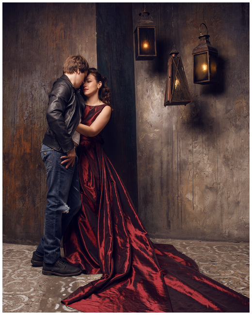
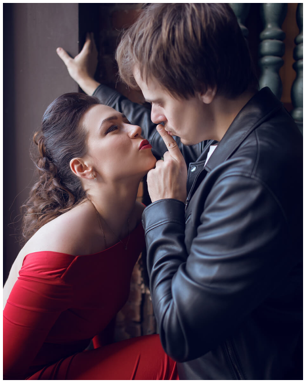
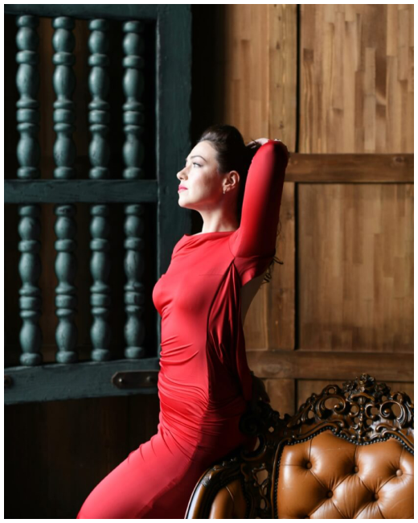

<div class="about-us">
  <div class="container">
    <h2 class="about-us__title"><a name="aboutUs"></a> О НАС</h2>

    <div class="about-us__content">
      <div class="masonry">
        <div class="masonry__image">
          <span class="fire1"></span>
          
        </div>
  
        <p class="masonry__text">
            Tнe Gussi-это независимый авторский проект, посвященный рок-музыке.
            <br><br>
            Творчество группы создавалось под девизом: “Делай то, что хочешь ты!” 
            и отражает наши взгляды на современную жизнь и тренды, привычные для общества.
        </p>
      </div>

      <div class="masonry-right">
        <div class="masonry-right__image">
          
        </div>
  
        <p class="masonry-right__text">
          История проекта начинается со случайного знакомства Software архитетора Саши и врача-педиатра Лены на вокзале в городе
          <br> Берлине. <br>
          Эта встреча, любовь и вера в друг друга помогли им вспомнить то, о чём они мечтали всю жизнь - о желании творить музыку. 
        </p>
      </div>

      <div class="masonry mb-low">
        <div class="masonry__image">
          
        </div>
  
        <p class="masonry__text">
          Летом 2020 года, проживая в маленьком городке на западе Германии, мы начали оборудовать домашнюю студию для звукозаписи,
          пожертвовав при этом гостиной и новой кухней.
          <br><br>
          К концу осени того же года мы наконец-то дали музыке, давно игравшей в наших сердцах, свободу.
        </p>
      </div>

      <div class="masonry-right">
        <div class="masonry-right__image">
          
        </div>
  
        <p class="masonry-right__text">
          Так появился первый сингл “Играй”, олицетворяющий то, как гитара в руках мужчины делает его всесильным,
          а микрофон в руках девушки делает ее невесомой.
          <br><br>
          В настоящий момент ведётся запись первого студийного альбома “Карантиниум” 
          на русском языке, релиз намечен на лето 2021 года. Часть композиций  из альбома будет опубликована как синглы на немецком языке.
        </p>
      </div>

      <div class="masonry-fluid">
        <div class="masonry-fluid__image">
          <span class="fire3"></span>
          
        </div>

        <p class="masonry-fluid__text">
          Итак, позволим мечте играть, ведь это <br>
          действительно круто, да и кто из нас в детстве <br>
          не мечтал стать рок-звездой?!
        </p>
      </div>
    </div>
  </div>
</div>